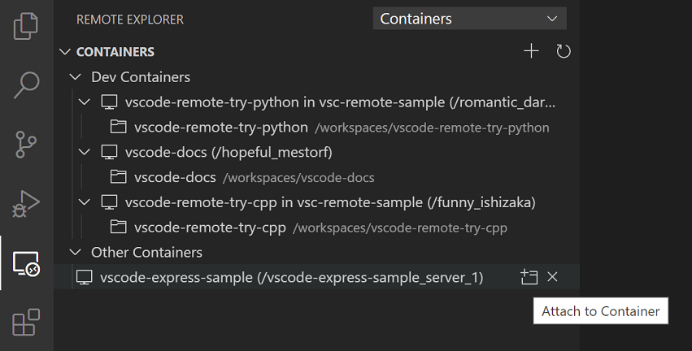
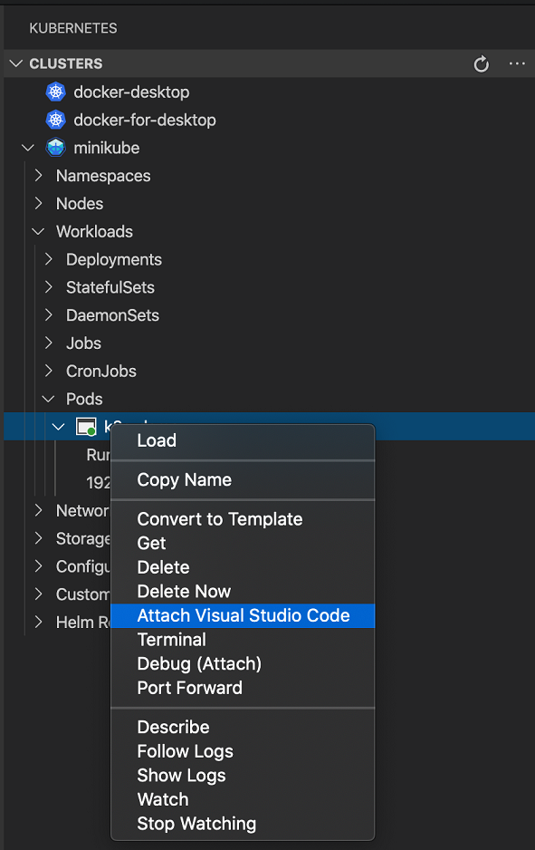

Attach to a running container
Visual Studio Code can create and start containers for you but that may not match your workflow and you may prefer to "attach" VS Code to an already running Docker container - regardless of how it was started. Once attached, you can install extensions, edit, and debug like you can when you open a folder in a container using devcontainer.json.
Attach to a Docker container
To attach to a Docker container, either select Remote-Containers: Attach to Running Container... from the Command Palette (kbstyle(F1)) or use the Remote Explorer in the Activity Bar and from the Containers view, select the Attach to Container inline action on the container you want to connect to.

Note: When using Alpine Linux containers, some extensions may not work due to
glibcdependencies in native code inside the extension.
Attached container configuration files
VS Code supports image or container name-level configuration files to speed up setup when you repeatedly connect to a given Docker container. Once attached, anytime you open a folder, install an extension, or forward a port, a local image-specific configuration file will automatically be updated to remember your settings so that when you attach again, everything is back to the right place.
By default, an image-level configuration is used. To view or update it after attaching, select Remote-Containers: Open Container Configuration from the Command Palette (
kbstyle(F1)).If you would prefer to tie your configuration to a container name, select Remote-Containers: Open Named Configuration File from the Command Palette (
kbstyle(F1)) after attaching. Any updates from this point forward will apply to this name-level configuration rather than at the image level.
Both of these files support a subset of devcontainer.json properties:
{
// Default path to open when attaching to a new container.
"workspaceFolder": "/path/to/code/in/container/here",
// An array of extension IDs that specify the extensions to
// install inside the container when you first attach to it.
"extensions": [
"dbaeumer.vscode-eslint"
],
// Any *default* container specific VS Code settings
"settings": {
"terminal.integrated.shell.linux": "/bin/bash"
},
// An array port numbers to forward
"forwardPorts": [8000],
// Container user VS Code should use when connecting
"remoteUser": "vscode",
// Set environment variables for VS Code and sub-processes
"remoteEnv": { "MY_VARIABLE": "some-value" }
}
See the attached container config reference for a complete list of properties and their uses.
Once saved, whenever you open a container for the first time with the same image / container name, these properties will be used to configure the environment.
Tip: If something is wrong with your configuration, you can also edit it when not attached to the container by selecting Remote-Containers: Open Attached Container Configuration File... from the Command Palette (
kbstyle(F1)) and then picking the image / container name from the presented list.
Finally, if you have extensions you want installed regardless of the container you attach to, you can update settings.json to specify a list of extensions that should always be installed.
Attach to a container in a Kubernetes cluster
To attach to a container in a Kubernetes cluster, first install the Kubernetes extension and kubectl along with the Remote - Containers extension. Then select the Kubernetes explorer from the Activity bar and expand the cluster and Pod where the container you want to attach to resides. Finally, right-click on the container and select Attach Visual Studio Code from context menu.
Note: Attached container configuration files are not yet supported for containers in a Kubernetes cluster.

Next steps
- Create a Development Container - Create a custom container for your work environment.
- Advanced Containers - Find solutions to advanced container scenarios.
- devcontainer.json reference - Review the
devcontainer.jsonschema.